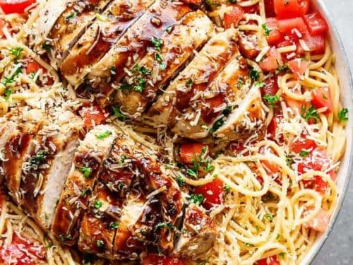

Bruschetta Chicken Pasta Salad

Description
This Bruschetta Chicken Pasta Salad is a must try! Italian grilled chicken, a nice kick of garlic will have everyone coming back for more.
Ingredients
- 1 lb thin spaghetti pasta
- 1 lb boneless skinless chicken breasts (2 large breasts)
- 1 teaspoon dried basil
- 1 teaspoon dried oregano
- 1/2 teaspoon garlic powder
- 1/4 cup of olive oil
- 2 tablespoon minced garlic
- 2 tablespoon red onion, finely chopped (about 1/3 of a red onion)
- 2 tablespoons balsamic vinegar, (adjust to taste)
- 8 roma tomatoes, diced
- 1/2cup grated parmesan cheese, plus more to serve
- 2 tablespoons finely chopped fresh basil or parsley
- Balsamic glaze to serve (optional)
- Salt and pepper to taste
Steps
- Cook pasta according to package directions; Drain and rinse in cold water. Transfer to a large bowl; set aside.
- While the pasta is boiling, season chicken with the herbs, garlic powder, salt and pepper. Heat 1 teaspoon of oil on in a grill pan or skillet, and sear chicken breasts over medium-high heat until browned on both sides and cooked through (about 6 minutes each side). Remove from pan; set aside and allow to rest.
- Add the remaining olive oil to the same hot pan / skillet. When hot, sauté the garlic and red onion until garlic is fragrant (about 1 minute). Turn off heat.
- Add in the tomatoes, toss them lightly in the heat to warm them through and combine all of the flavours. Add the tomato mixture onto the pasta.
- Mix in the vinegar, parmesan cheese and basil (or parsley). Season with salt and pepper to your taste. Slice the chicken; add to pasta. Toss the pasta with all of the ingredients until well combined.
- Top with 2 tablespoons of extra parmesan cheese (OPTIONAL) and serve immediately with balsamic glaze, OR refrigerate up to an hour before serving.